Practica 2.6
Introduccion
En esta practica vamos a Desplegar con Tomcat9 y Maven.
Primero descargamos tomcat9:
Usando el comando wget y la ruta del gz
Luego lo extraemos y le cambiamos el nombre
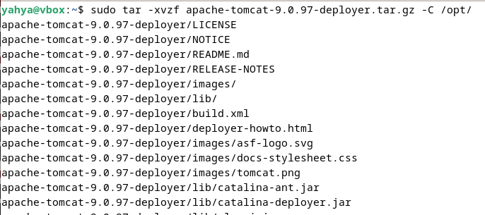 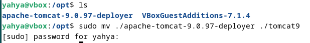
Establecimos el propietario
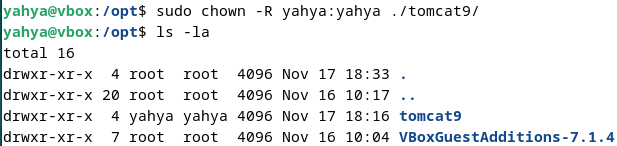
Decargamos JDK:
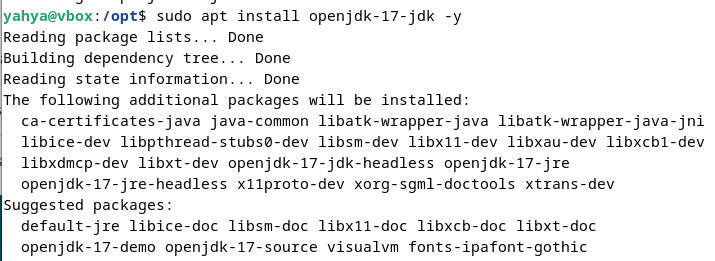
Instalamos Tomcat manualmente:
Establecimos las variables de entorno:
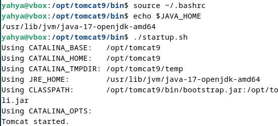
Accedemos a la interfaz de tomcat.
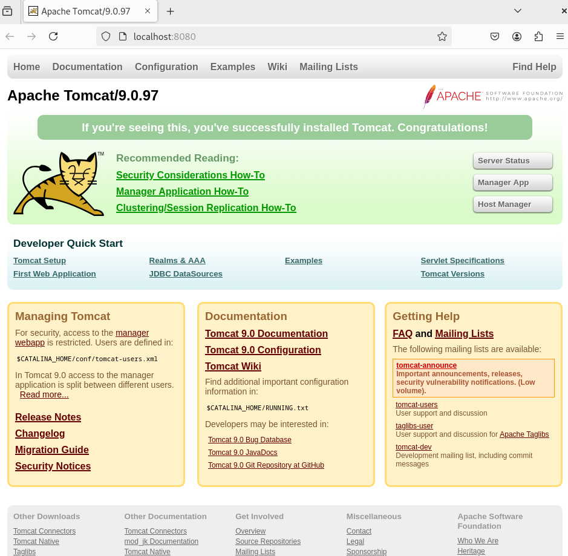
Creamos el usuario admin que seria yahya en mi caso
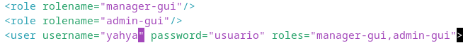
Desplegamos el .war de ejemplo para probar
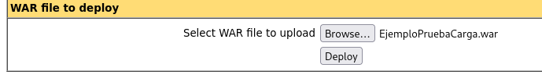
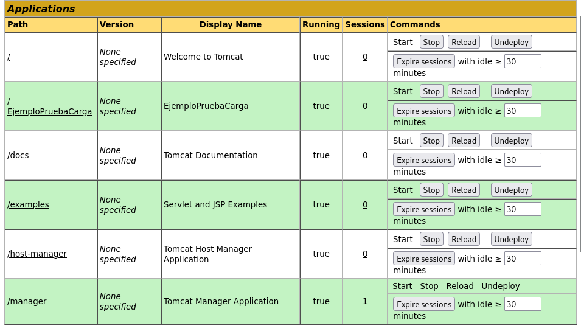
Pasamos ya a la instalacion de Maven
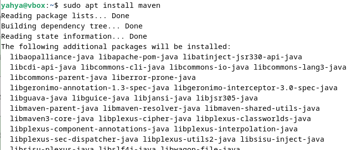
Estalbecimos lso roles de usuarios
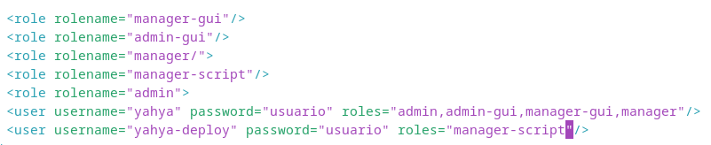
Establecimos el ID del servidor en /etc/maven/settings.xml
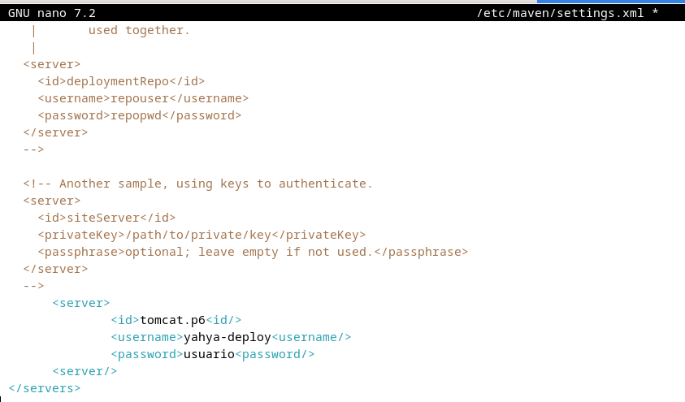
Generamos un proyecto Marven
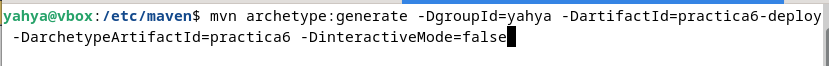
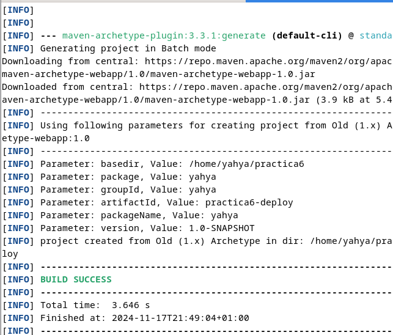
Configuramos el pom.xml de nuestro proyecto generado por Maven.
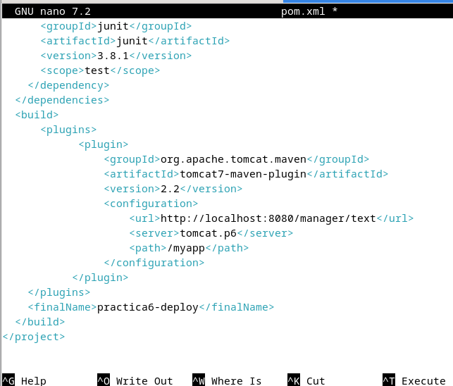
Lo demas no me ha ido bien creo que era por la version del plugin de marven.